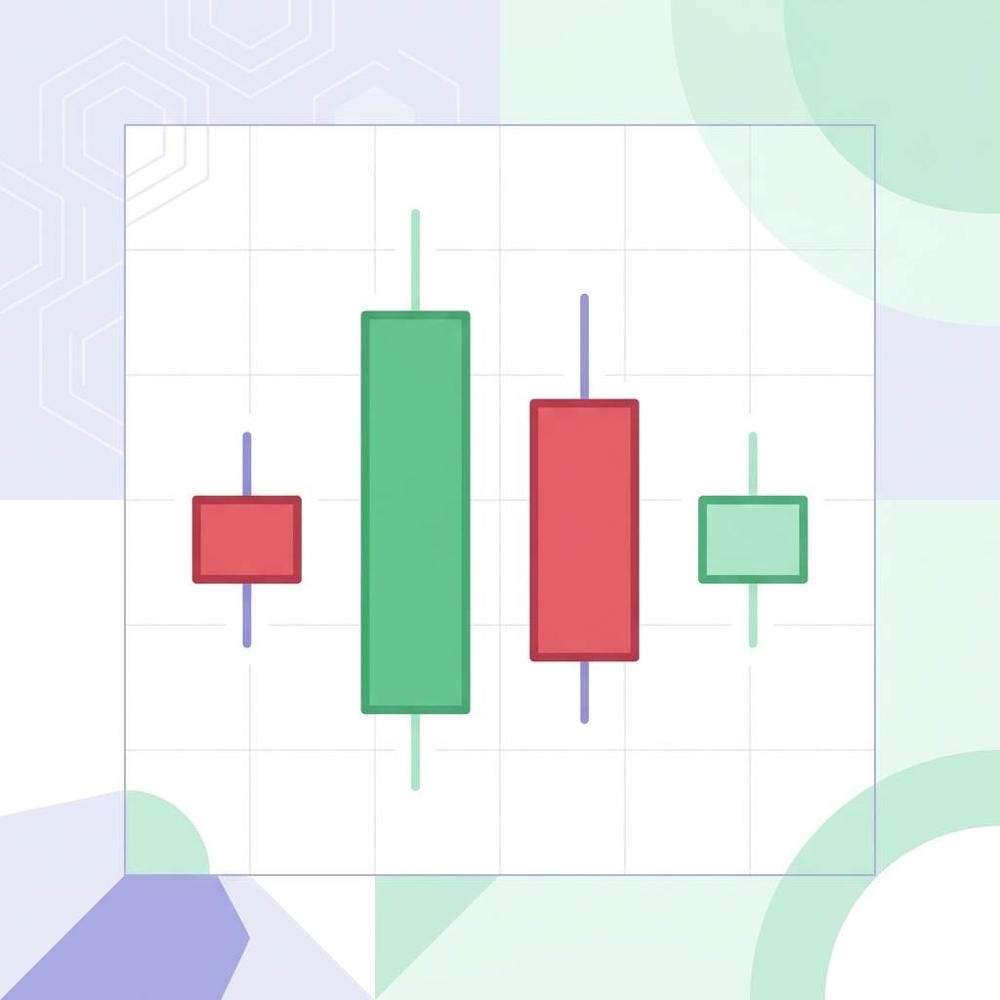

上一篇的基本面分析，問的是「這家公司本質好不好」。這一篇的技術面分析，問的是另一個問題：「現在這個時機點，市場情緒是怎麼走的？」
兩種分析不是競爭關係，而是互補：基本面告訴你「買什麼」，技術面幫你判斷「什麼時候買」。很多投資人兩者都用。
技術面分析的基本邏輯
技術面分析有一個核心假設：歷史會重演。市場參與者的集體心理（貪婪、恐懼、追高殺低）會在圖表上留下痕跡，這些模式有一定的重複性，所以可以用來預測短期走勢。
它看的不是公司財報，而是：
- 價格：股價怎麼走
- 成交量：有多少人在買賣
- 指標：從價格和成交量衍生出來的統計數字
K 線（蠟燭圖）：最基本的工具
K 線（又叫蠟燭圖）是技術分析的基礎。每一根 K 線代表一段時間內（例如一天）的四個價格資訊：
- 開盤價：這段時間開始的價格
- 收盤價：這段時間結束的價格
- 最高價：這段時間的最高點
- 最低價：這段時間的最低點

實體（開盤到收盤的部分）顯示漲跌方向：
- 紅色（陽線）：收盤 > 開盤，代表這段時間是漲的
- 綠色（陰線）：收盤 < 開盤，代表這段時間是跌的
上下的「影線」代表最高和最低點。影線長，代表這段時間價格波動大、市場分歧明顯。
均線：趨勢的方向盤
均線（Moving Average，MA）是把過去 N 天的收盤價平均起來，連成一條線。常見的有：
- MA5、MA10：短期均線，反映短期趨勢
- MA20（月線）：中期趨勢指標
- MA60、MA120、MA240：長期均線，反映長期趨勢
均線的兩個核心用法：
- 趨勢判斷：股價在均線上方，趨勢向上；在均線下方，趨勢向下。
- 黃金交叉/死亡交叉：短期均線往上穿越長期均線（黃金交叉），可能是買進訊號；往下穿越（死亡交叉），可能是賣出訊號。
常見技術指標
除了 K 線和均線，還有幾個常用的技術指標：
RSI（相對強弱指數）
- 數值 0 到 100，反映近期漲跌的強弱
- RSI > 70：超買（漲太多、可能回調）
- RSI < 30：超賣（跌太多、可能反彈）
- 新手最容易理解、也最廣泛被使用的指標之一
MACD（指數平滑異同移動平均）
- 由兩條均線的差距衍生，用來判斷趨勢動能
- MACD 柱狀圖由負轉正：動能轉強，可能是買進訊號
- MACD 柱狀圖由正轉負：動能轉弱，可能是賣出訊號
布林通道（Bollinger Bands）
- 由均線加減標準差畫出上下軌
- 股價觸碰上軌可能過熱、觸碰下軌可能超跌
- 通道收窄代表波動縮小，往往是大波動前的蓄積
技術面分析的限制
技術面很實用，但有幾個必須知道的限制：
- 不保證準確：指標是統計工具，不是水晶球。同一個指標，不同時機會有不同效果。
- 自我實現的預言：因為很多人同時在看同樣的指標，有時「大家都覺得要跌」就真的跌了——但這不代表指標本身有預測力。
- 單用容易誤導：指標要綜合看，單一指標訊號假訊號很多。
- 短線用途居多：技術面對短中期走勢比較有參考價值，長期投資還是以基本面為主。
技術分析是工具，不是神諭。用它輔助判斷時機，不要用它取代對公司基本面的理解。
用工具看技術指標更有效率
技術分析需要同時觀察多個指標、多個時間週期。手工翻圖非常耗時。我自己用的股票投資分析系統整合了常用的技術指標，讓你可以快速切換不同股票和時間週期，把分析效率大幅提升。有興趣的話歡迎去看看。
小結
- K 線：每根包含開盤、收盤、最高、最低四個資訊，是技術分析的基礎。
- 均線：判斷趨勢方向，黃金/死亡交叉是常見訊號。
- RSI：超買（>70）超賣（<30），直觀好用。
- MACD：看趨勢動能的轉變。
- 技術分析是輔助工具，搭配基本面使用效果更好。
下一篇，我們把進階篇最後一個面向補齊——籌碼面與財務面：看懂法人動向和財報三表。
系列導覽
- 📚 回到 投資理財修煉 全系列目錄
- ⬅️ 上一篇：基本面分析：怎麼看一家公司值不值得投資
- ➡️ 下一篇：籌碼面與財務面：法人動向與財報三表
本文為個人學習記錄與知識整理，非投資建議。投資有風險，請依自身情況獨立判斷 🐾